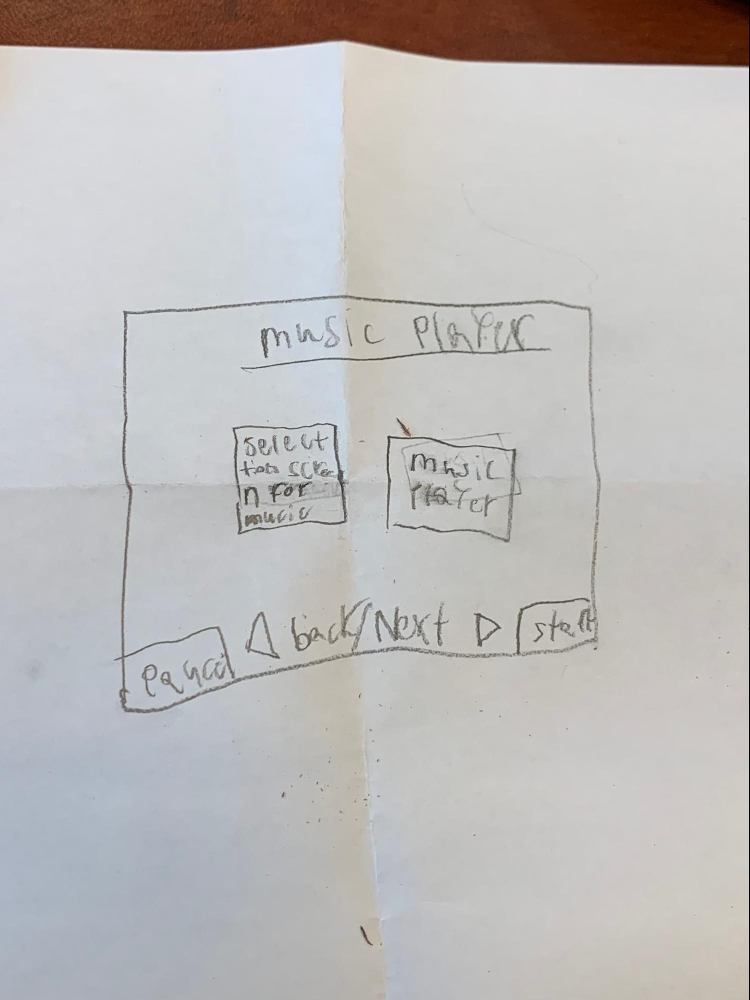

"Describe this Case Study"
"At the bottom theres a pause and a start button and a back button when you wanna go back to the other music you were just listening to and a next button if you wanna go forwards in your play list."